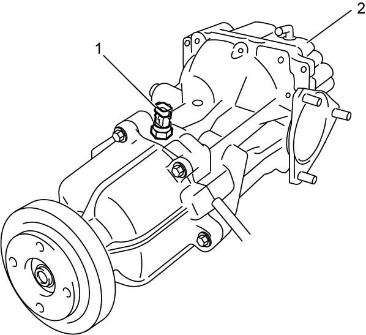
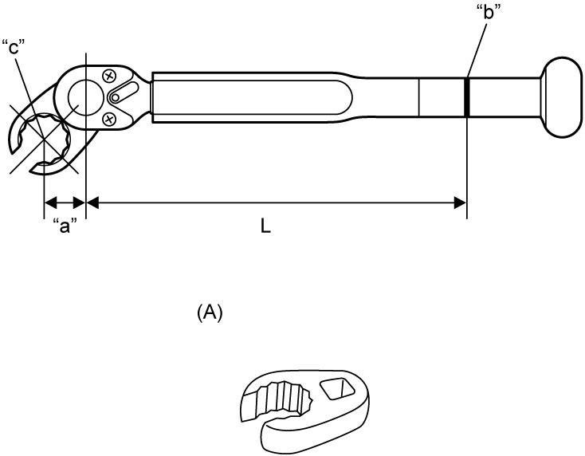

3B
| Rear Drive Coupling Air Temperature Sensor Removal and Installation |
Removal
1)Hoist vehicle.
2)Remove rear drive coupling air temperature sensor (1) from rear differential (2).


 "Expand image")
Installation
Reverse removal procedure noting the following points.
•Tighten rear drive coupling air temperature sensor to specified torque.
•When tightening rear drive coupling air temperature sensor with special tool, calculate reading value (M) of the torque wrench using the following formula.
Tightening torque formula.
M = T x L / (L + “a”)
M: Value indicated on torque wrench
T: Specified tightening torque
L: Effective length of torque wrench
“a”: Effective length of extension
•When tightening rear drive coupling air temperature sensor with special tool, calculate reading value (M) of the torque wrench using the following formula.
NOTICE:
If the rear drive coupling air temperature sensor is tightened using the special tool until the torque wrench reads the specified torque below, the rear drive coupling air temperature sensor may be damaged.
Follow the steps below to tighten the rear drive coupling air temperature sensor to specified torque using the special tool.
M = T x L / (L + “a”)
M: Value indicated on torque wrench
T: Specified tightening torque
L: Effective length of torque wrench
“a”: Effective length of extension

 "Expand image")
| “b”: | Handle center line (power point) | “c”: | Pivot point (fulcrum) |